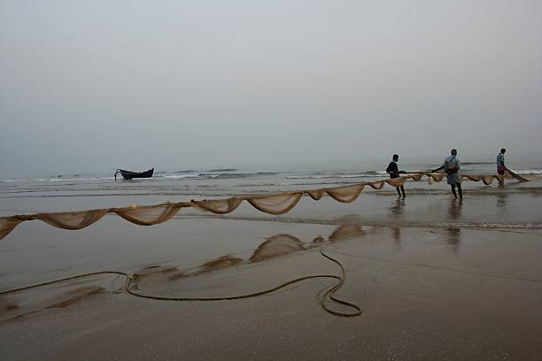

Kolkata’s love for art and literature is evident in its numerous theaters, book fairs, and film festivals. The city is home to the legendary Rabindra Sadan and Nandan, where cultural performances and cinematic masterpieces are celebrated. Football runs deep in Kolkata’s veins, with passionate fans filling stadiums to cheer for Mohun Bagan and East Bengal. The Hooghly River, with its scenic ghats and the majestic Vidyasagar Setu, offers a serene escape from the city’s hustle. With its warmth, resilience, and artistic soul, Kolkata remains the beating heart of Bengal.
